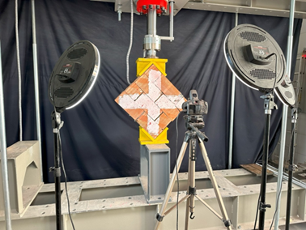
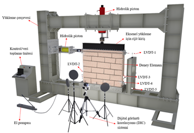
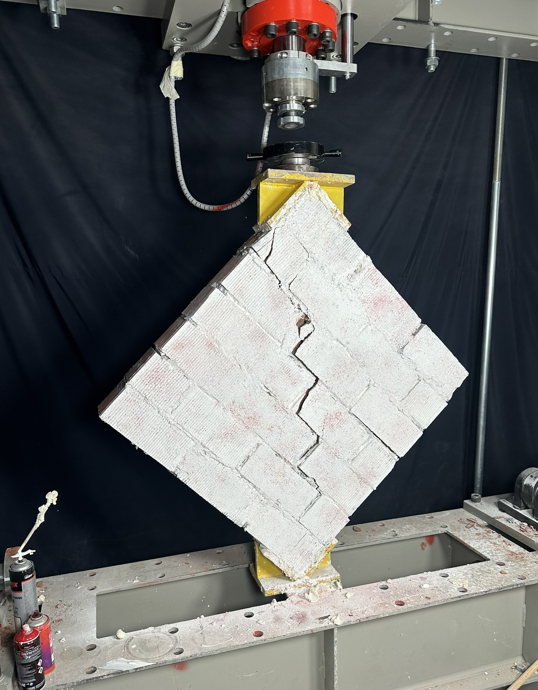
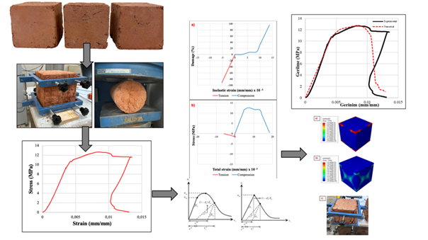

Geometriden ölçülebilir davranışa.
Malzeme karakterizasyonu, prototip üretimi ve duvar deneyleri, sayısal modelleme ile birlikte ele alınıyor. Fotoğraflar deney ortamını; aşağıdaki bulgular ise kendi kaynaklarında bildirilen karşılaştırmaları gösteriyor.
Ankara Üniversitesi, geliştirilen tuğlalarla örülen duvarların deneylerinde geleneksel yığma tuğla duvarlara göre bu artışın elde edildiğini bildiriyor.
Kaynak, üniversitenin 14 Ağustos 2026 tarihli duyurusudur. Bu özet değer tüm geometri, harç ve yükleme koşullarına genellenmez.
Deneysel bulgunun kaynağı ↗Deney düzenekleri ve gözlemler

Diyagonal basınç
Duvar paneli karşılıklı köşelerinden yükleniyor. Bu yerleşim, panelin kesme davranışının incelenmesine olanak veriyor. Kameralar numune yüzeyindeki hareketi izlemek için yerleştirilmiş.

Yükleme ve ölçüm sistemi
Şema; eksenel ve yatay yükleme pistonlarını, LVDT yer değiştirme ölçerlerini, veri toplama ünitesini ve dijital görüntü korelasyonu (DIC) sistemini gösteriyor.

Çatlak gelişimi
Yükleme sonrasında numunede oluşan çatlaklar görülüyor. Hasar örüntüsü, ölçülen tepkiyle birlikte incelenebilen fiziksel bir kayıt oluşturuyor.

Malzemeden modele
ArchBrick’in paylaştığı yöntem görseli, malzeme deneyleri ile sayısal model arasındaki bağı gösteriyor. 2025 makalesi, model yaklaşımının referans tuğlaların üç doğrultudaki basınç deneyleriyle kontrol edildiğini açıklıyor.
Düzenek fotoğrafları ve şemalar: ArchBrick · Ar-Ge ve Doğrulama ↗.
Geometrilerin karşılaştırılması
2025 çalışması 12 boşluk geometrisini inceliyor. Nihai tasarım için referansa kıyasla bildirilen en yüksek artışlar:
- Yük kapasitesi
- +%24
- Rijitlik
- +%13
- Enerji sönümleme kapasitesi
- +%182
Bunlar deneyden doğrudan ölçülmüş ürün garantileri değil, çalışmadaki X, Y ve Z doğrultularındaki sayısal karşılaştırmaların en yüksek sonuçlarıdır. Engineering Failure Analysis · DOI ↗
Veriyi nasıl okumalı?
Deney düzeneği, numune geometrisi, harç sınıfı, yükleme doğrultusu ve sınır koşulları sonucu etkiler. Üniversitenin deney duyurusundaki %80’in üzerindeki artış ile makalelerin sayısal sonuçları farklı karşılaştırmalardır.
Burada kaynaklarda yayımlanan özet bulgular sunuluyor. Ham yük–yer değiştirme kayıtları, numune bazlı sonuçlar ve istatistiksel dağılımlar paylaşılmadığı için bu verilerden yeni eğriler veya ortalama değerler üretilmemiştir.